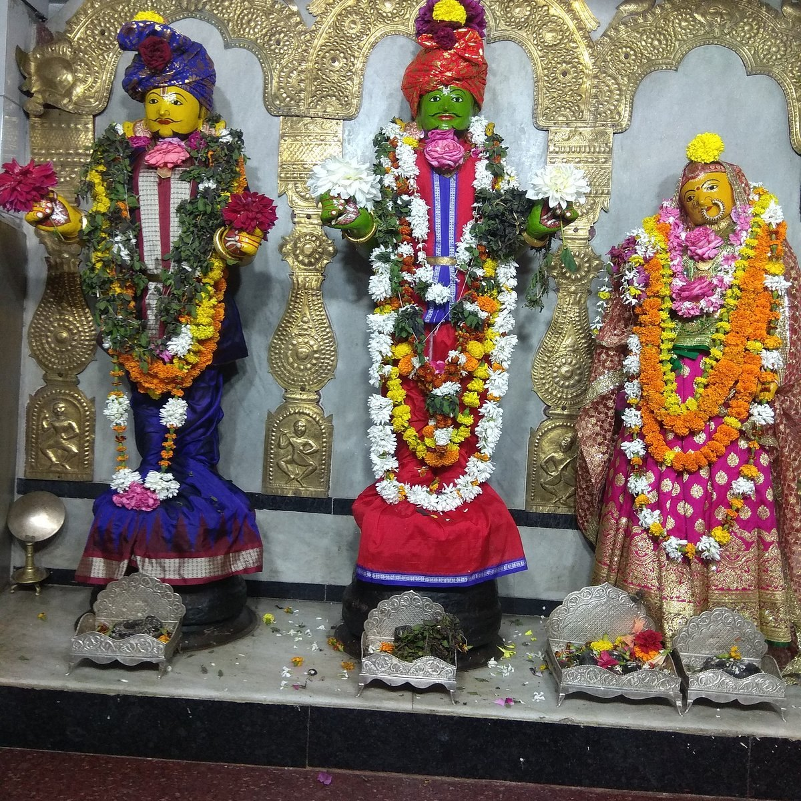
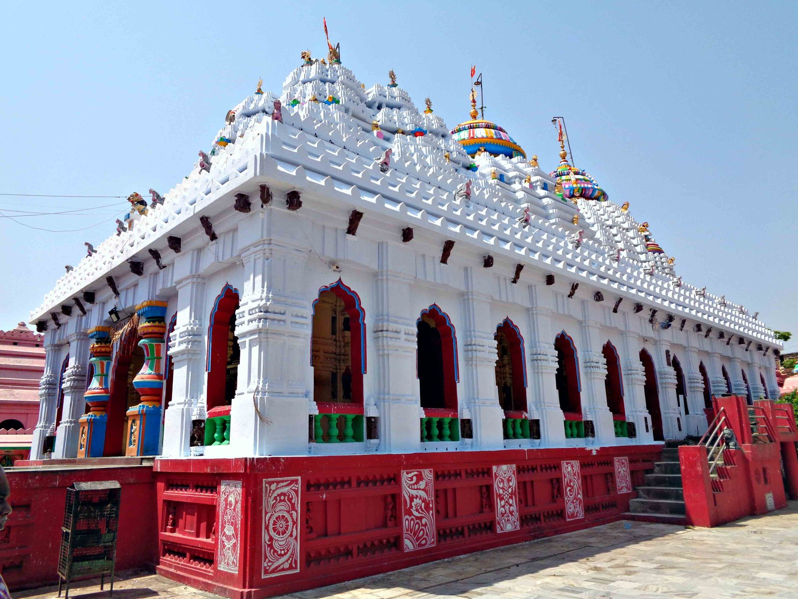

Odagaon
The Raghunath Jew Temple at Odagaon is the best-known Rama temple of Nayagarh district and one of the notable temples of Lord Ramachandra in Odisha. Odagaon lies about 26 km from Nayagarh town and roughly 115 km from Bhubaneswar.
The sanctum houses wooden images of Sri Raghunath, Sita and Lakshman. The temple is built in the Kalinga style and is crowned by three kalashas, the main one said to be of pure gold. Some accounts call the shrine medieval, while the district tourism page dates the present temple to around 1903.
Odagaon also has literary fame. Local tradition says the poet Upendra Bhanja composed his celebrated work Baidehisha Vilasa at the feet of Sri Raghunath here, and that he meditated at this site on the Rama Taraka mantra.


Rama Navami, the birthday of Lord Rama, is the most important festival here. Devotees from across the district arrive for darshan, bhajans and special worship, and the temple is at its liveliest.
By road, take the state highway from Bhubaneswar through Nayagarh to Odagaon (SH-21 links Nayagarh, Odagaon and Laukhal). The nearest railway station is Nayagarh Town and the nearest airport is Bhubaneswar.
Odagaon has a Community Health Centre and a State Bank of India branch, so basic medical help and banking are close at hand. The Raghunath temple at Saradhapur is another nearby shrine of the same name.
Tap a photo to see it bigger.